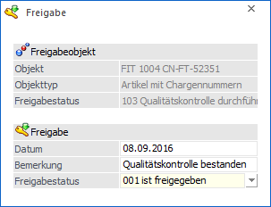
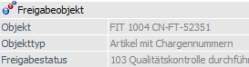
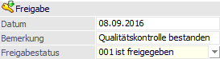

Über den Button bzw. Tabellenbutton "Freigabe" kann für Artikel, Personenkonten, Offene Posten, Belege und Buchungsstapel der Freigabestatus geändert werden.

Voraussetzung zur Statusänderung ist, dass der Benutzer einem Benutzerschema angehört, welches den entsprechenden Freigabestatus ändern darf.
Freigabeobjekt

Ø Objekt
An dieser Stelle wird das Objekt angezeigt für welches der Freigabestatus verändert werden soll.
Ø Objekttyp
Abhängig vom Objekt wird hier der Typ des Objekts angezeigt.
Ø Freigabestatus
In dem Feld "Freigabestatus" wird der bisherige Freigabestatus des Objekts angezeigt.
Freigabe

Ø Datum
An dieser Stelle wird das Datum, an welchem die Änderung des Freigabestatus erfolgt ist, eingegeben. Dieses kann in weitere Folge im Freigabeprotokoll ausgewertet werden.
Ø Bemerkung
In diesem Feld kann ein Bemerkungstext hinterlegt werden. Dieser Text wird im Protokoll angedruckt.
Ø Freigabestatus
Aus der Auswahlbox kann der neue Freigabestatus ausgewählt werden.
Buttons

Ø Ok
Durch Anwahl des Buttons "Ok" bzw. der Taste F5 wird die Änderung des Status durchgeführt.
Ø Ende
Durch Anwahl des Buttons "Ende" bzw. der Taste ESC wird der Programmbereich geschlossen und alle vorgenommenen Änderungen verworfen.